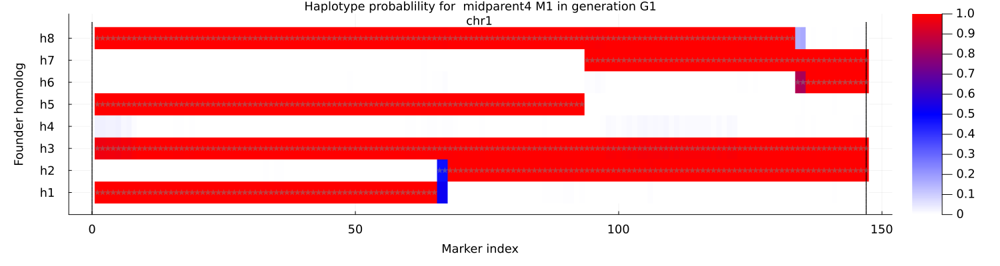

Run polyorigin
Run function polyorigin for haplotype reconstruction in diploid or tetraploid multi-generation pedigrees.
using PolyOrigin
workdir = abspath(pkgdir(PolyOrigin),"docs","run_polyorigin")
dataid = "sim_4x"
genofile = dataid*"_geno.vcf.gz"
pedfile = dataid*"_ped.csv"
truegenofile = abspath(workdir,dataid*"_truegeno.vcf.gz")
trueorigfile = abspath(workdir,dataid*"_trueorig.vcf.gz")
outstem = dataid*"_out"
phasedgeno, polyancestry, joinedancestry = polyorigin(genofile,pedfile;
chrpairing_phase=22,
chrpairing=44,
isphysmap = false,
isrefine = true,
isplot = false,
refhapfile = truegenofile,
trueorigfile = trueorigfile,
workdir,
outstem,
)
filter(x->occursin(outstem,x), readdir(workdir))10-element Vector{String}:
"sim_4x_out.log"
"sim_4x_out_ancestryerr.csv"
"sim_4x_out_chrpairing.csv"
"sim_4x_out_imputed.vcf.gz"
"sim_4x_out_joinedancestry.csv.gz"
"sim_4x_out_maprefined.vcf.gz"
"sim_4x_out_nrecom.csv"
"sim_4x_out_phased.vcf.gz"
"sim_4x_out_phaseerr.csv"
"sim_4x_out_polyancestry.csv.gz"where chrpairing_phase=22 denotes only bivalent formations in parental phasing, and chrpairing=44 denotes bivalent and quadrivalent formations in ancestral inference. isphysmap specifies if the input map is a physical map, isrefine specifies if refining the input map, workdir specifies the directory of input and output files, and outstem specifies the stem for output filenames.
The optional true files are used only for calibrating absolute phase (that is the ordering of homologies) for calculating accuracy in the following.
acc = calaccuracy!(truegenofile,trueorigfile, joinedancestry) group nunphasederr ngeno nheteroerr npermerr npermoppty
──────────────────────────────────────────────────────────────────────────
founder_phasing 0 441 0 0 348
midparent_phasing 0 147 0 0 109
offspring_phasing 6 5733 43 4 3957
midparent_origin 2 147 0 0 144
offspring_origin 224 5733 84 2 5470where the accuracies are for haplotype phasing and ancestral inference and for founders, intermediate parents, and leaf offspring. The permutation (or switch for diploid) phasing error is given by npermerr/npermoppty.
trueorig = readtruegeno!(trueorigfile,joinedancestry)
plotcondprob(joinedancestry;
ismidparent = true,
individual = 4,
trueorig,
)
where the gray crosses ("x") denote true founder origins for the 4-th parent that is an intermediate parent.
rm.(filter(x->!isdir(x) && occursin(outstem,x), readdir(workdir; join=true)))Clean up output files.